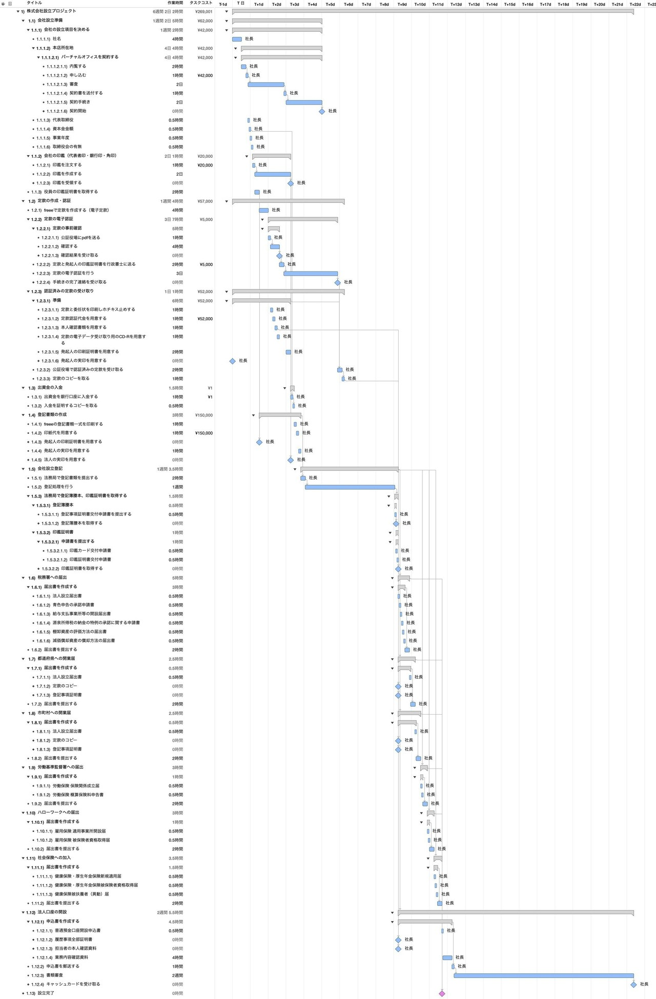
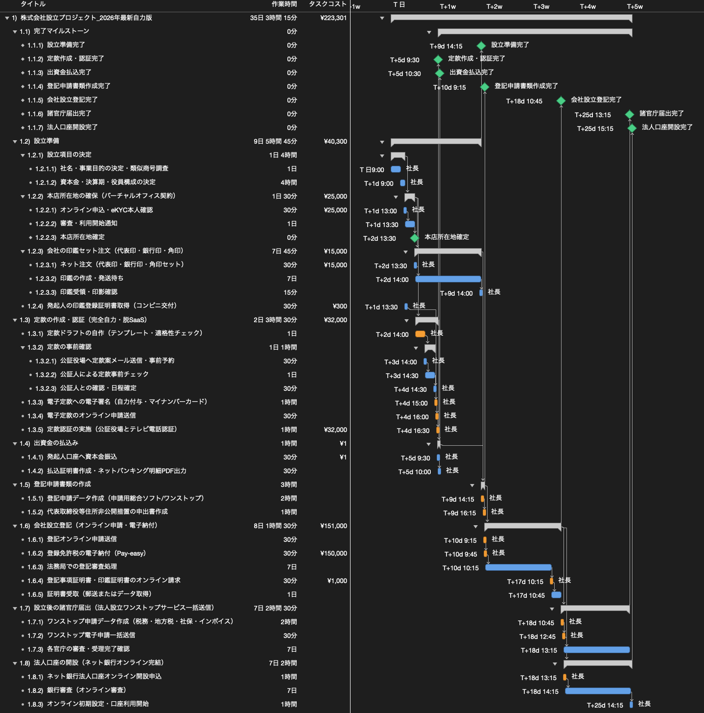

「株式会社を設立するWBS」を2026年版にアップデートしてみた
今回は「WBSで覗いてみた」シリーズとして、2018年11月に公開した「株式会社を設立するWBSを作ってみた」を、2026年現在の制度や環境に合わせてアップデートしました。
1. 2018年版の振り返りと今回の前提条件
まずは、2018年当時の記事で作成した会社設立プロジェクトのWBSを振り返ります。

2018年版のWBSでは、定款や登記書類の作成にクラウドサービスの「freee会社設立」を利用することを前提としていました。発起人である社長1人がすべての作業を担当してリソース平準化を行った場合、全体の工期は21日（うち登記完了まで11日）、資本金を1円とした場合の総費用は269,001円という結果でした。
当時の作業を振り返ると、専門知識が必要な書類作成や電子定款の署名手続きを補うために支援サービスを利用していましたが、現在は定款の条文作成や記載事項の確認などにAIの力を借りることができます。そのため、今回は専用の会社設立支援サービスを使わず、自力で手続きを進める前提としました。あわせて、2018年から現在にかけて実施された法改正や行政手続きのデジタル化も吸収し、2026年版の株式会社設立プロジェクトとしてWBSを再構築します。
2. 2018年から現在にかけての制度・手続きの変化
2018年当時と比較すると、会社設立を取り巻く制度や手続きの方法にはいくつかの変更点があります。
定款の作成と公証役場での認証手続き
支援サービスを使わずに自力で進めるため、定款のドラフトはテンプレートとAIを活用して自作し、記載事項や事業目的の適格性を確認します。電子定款への署名については、2018年版では提携の行政書士へ代行を依頼していましたが、今回はマイナンバーカードと署名用プラグインを用いて自力でPDFファイルへ電子署名を付与する形としました。また、公証役場での定款認証は、窓口へ出向く代わりにウェブ会議システムを用いた「テレビ電話認証」で完了できるようになっています。さらに、2022年1月の公証人手数料令の改正により、資本金100万円未満の場合の定款認証手数料が50,000円から30,000円へ引き下げられました。
オンラインによる設立登記と代表取締役等住所非公開措置
法務局への設立登記申請は、2021年2月の商業登記規則等の改正によってオンライン申請時の押印義務が見直されたこともあり、書面の窓口持参ではなく「登記・供託オンライン申請システム」からのデータ送信とPay-easyによる登録免許税の電子納付で進める形に変更しています。また、2024年10月に施行された「代表取締役等住所非公開措置」により、一定の要件のもとで登記事項証明書等に表示される代表取締役の自宅住所を市区町村までにとどめることが可能となったため、この申出書の作成を新しいタスクとして組み込んでいます。
設立後の諸官庁届出と法人口座の開設
2018年当時は、登記完了後に税務署、都道府県税事務所、市町村役場、年金事務所の4箇所へそれぞれ書類を持参または郵送していましたが、現在はマイナポータルの「法人設立ワンストップサービス」を利用することで、各官庁への届出をオンラインで一括送信できるようになりました。2023年10月に開始されたインボイス制度（適格請求書発行事業者）の登録申請もこの手続きの中で同時に行います。また、法人口座の開設についても、郵送中心の手続きからネット銀行のオンライン審査へ移行したことで、申し込みから利用開始までの手続きが簡素化されています。
3. 2026年版のWBSと期間・コストの変化
これらの変更点を反映し、社長1人体制で平準化を行った2026年版のWBSがこちらです。2018年版から作業方法や制度が変わった12のタスクはオレンジ色で示しています。

プロジェクト期間の変更
2026年版の全体工期は、社長1人で平準化を行った状態で25営業日（カレンダー上の実日数で約5週間）となりました。2018年版の21日と比較すると日数上は4日増えていますが、これは法人印鑑の配送待ちや、法務局での登記審査、諸官庁での届出審査、ネット銀行の口座開設審査といった外部の待機期間に、それぞれ7営業日のバッファを明示的に確保したためです。
一方で、発起人自身が手を動かす実作業に着目すると、行政書士による電子定款作成の待機期間（3日）がなくなったほか、公証役場や法務局、税務署・年金事務所などへ出向く移動時間や窓口での待ち時間が解消されています。定款の自作やオンライン申請データの作成といった作業は増えるものの、手続きの大部分がPC上で完結するため、実務上の負担は2018年当時よりも軽減されています。
コストの変更
2018年版と同じく資本金を1円とした条件で比較すると、プロジェクトの総費用は2018年版の269,001円から、2026年版では223,301円となり、全体で45,700円減少しました。
内訳としては、定款認証手数料が法改正により50,000円から30,000円へ20,000円減額されたこと、電子定款の作成代行料5,000円がマイナンバーカードによる自力署名で0円になったことが挙げられます。また、バーチャルオフィスの初期費用（42,000円から25,000円）や法人印鑑セットの購入費用（20,000円から15,000円）も現在の相場に合わせて見直した一方、コンビニ交付による印鑑証明書取得費（300円）や登記事項証明書のオンライン請求実費（1,000円）を新たに計上しています。登録免許税の150,000円と定款の同一情報提供手数料2,000円は2018年当時と同額です。
4. まとめ
今回は、2018年に作成した「株式会社を設立するWBS」を題材に、AIを活用した自力での書類作成と、現在までの制度変更・デジタル化を反映した2026年版WBSへのアップデートを行いました。
約8年の間に、定款認証のオンライン化や手数料の引き下げ、商業登記のオンライン申請、代表取締役の住所非公開措置、そして法人設立ワンストップサービスによる諸官庁届出の一括化など、会社設立に関わる環境は着実に変化しています。かつては各所への訪問や書類の郵送が必要だった工程も、現在は手元のPCとマイナンバーカードがあれば一通り進められる構造になりました。
このように過去のプロジェクトのWBSを現在の前提条件で引き直してみると、制度やツールの変化がどのタスクの工数や待機期間、コストに影響を与えるのかを客観的に把握することができます。
プロジェクト計画の基礎となるWBSの作り方や平準化の考え方について詳しく知りたい方は、「WBSの勘所」や「ガントチャートの決め手は平準化」もぜひ合わせてご覧ください。